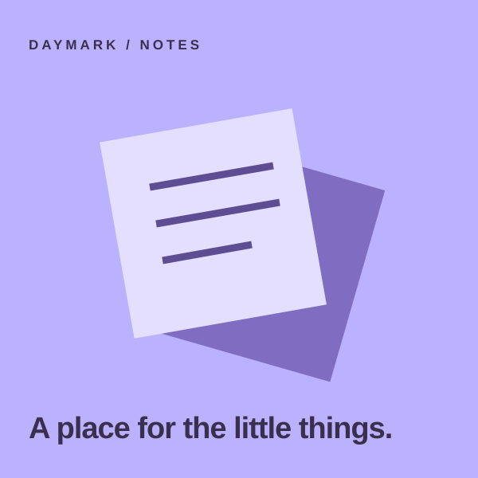
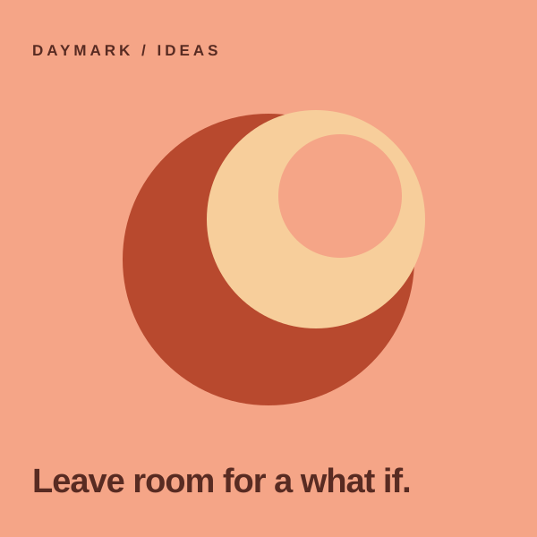
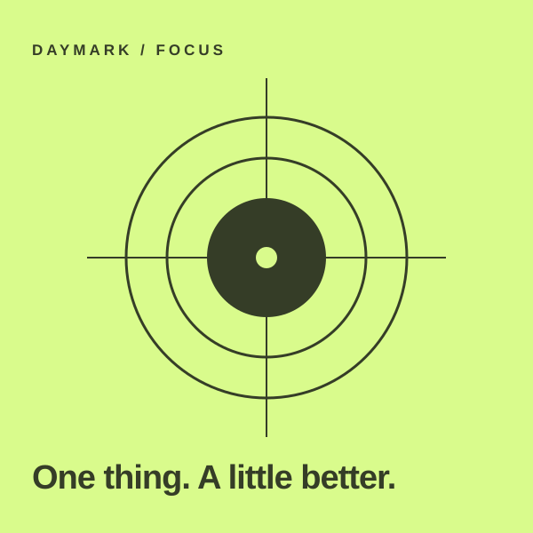

NOTES✦
Paper trail
A home for stray thoughts, useful links, and the things worth keeping.

A LITTLE SPACE TO MAKE THINGS
Your notes, plans, and small beginnings. All in one place.
A home for stray thoughts, useful links, and the things worth keeping.

Collect references, connect the dots, and give your next big idea a little room to grow.

Less on your list. More on what matters.
